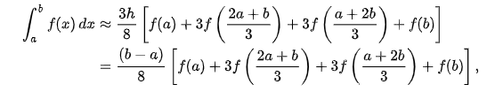
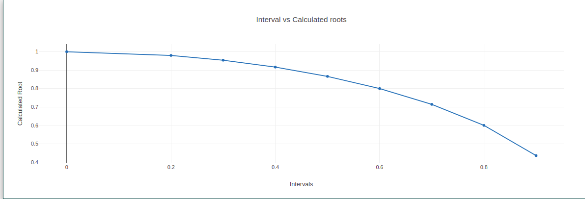

To Perform Numerical Integration using Simpson 3/8 Formula for a given data set / function
Simpson's rule is one of the numerical methods which is used to evaluate the definite integral. Usually, to find the definite integral, we use the fundamental theorem of calculus, where we have to apply the antiderivative techniques of integration. However, sometimes, it isn't easy to find the antiderivative of an integral, like in Scientific Experiments, where the function has to be determined from the observed readings. Therefore, numerical methods are used to approximate the integral in such conditions. Other numerical methods used are trapezoidal rule, midpoint rule, left or right approximation using Riemann sums. Here, we will discuss Simpson's rule formula, 1/3 rule, 3/8 rule and examples.
Simpson's rule methods are more accurate than the other numerical approximations and its formula for n+1 equally spaced subdivision is given by;
b∫a f(x) dx ≈ Sn= Δx/3[f(x0)+4f(x1)+2f(x2)+4f(x3)+....+2f(xn-2)+4f(xn-1)+f(x)]
Where n is the even number, △x = (b - a)/n and xi = a + i△x
If we have f(x) = y, which is equally spaced between [a, b] and if a = x0, x1 = x0 + h, x2 = x0
+ 2h …., xn = x0 + nh, where h is the difference between the terms. Or we can say that y0 =
f(x0), y1 = f(x1), y2 = f(x2),……,yn = f(xn) are the analogous values of y with each value of x.
Simpson's 1/3rd rule is an extension of the trapezoidal rule in which the integrand is approximated by a second-order polynomial. Simpson rule can be derived from the various way using Newton's divided difference polynomial, Lagrange polynomial and the method of coefficients. Simpson's 3/8 rule is defined by:

This is the Simpson's 3/8 rule for integration.
import math
a= int(input("Enter the lower limit: "))
b= int(input("Enter the upper limit: "))
n= int(input("Enter the length: "))
def f(x):
return math.sqrt(1-x**2)
def simpson38(a,b,n):
h= (b-a)/n
sum= f(a)+f(b)
for i in range(1,n):
c = a+i*h
if i%3==0:
sum+=2*f(c)
else:
sum+=3*f(c)
ans= (3*h/8)*sum
return ans
result= simpson38(a,b,n)
print("Result by Trapezoidal method is: ",result)
Click here to perform simulation
Take Observations from the method and tabulate it for the given intervals.
Plot a graph also. (Interval vs Value).

This rule is more efficient and accurate than the standard method. This is because of the fact that this rule uses one more functional value. One should note that for the simpson's 3 / 8 rule, there is also a composite simpson's 3 / 8 rule. The latter is more similar to the generalized form. The Simpson's 3 / 8 rule is also known as the Simpson's second rule of integration.